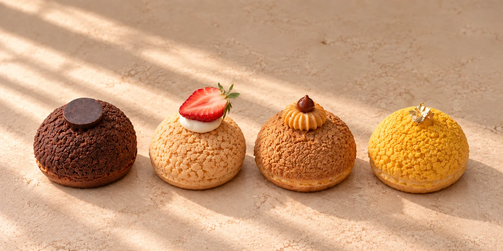
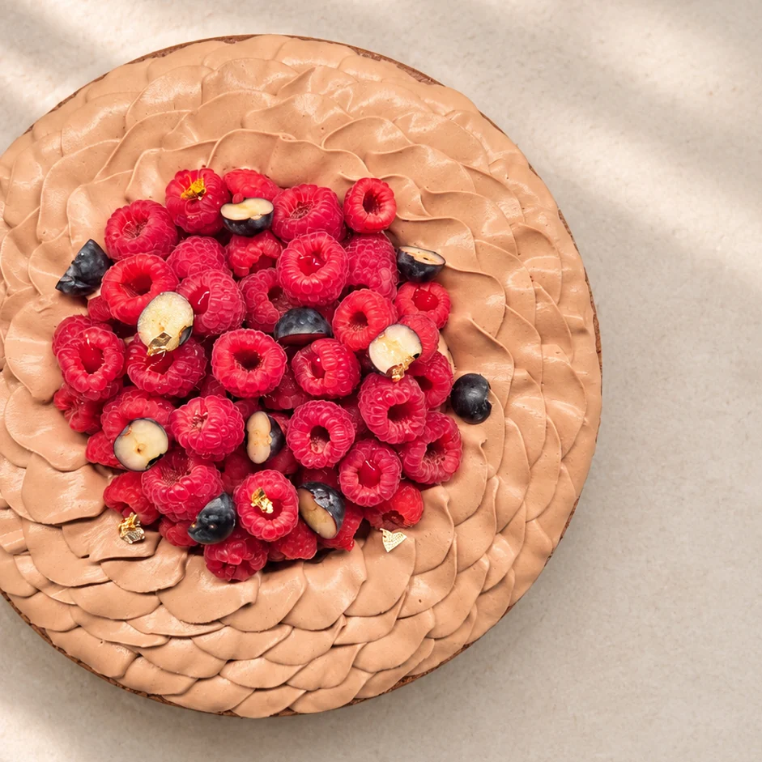
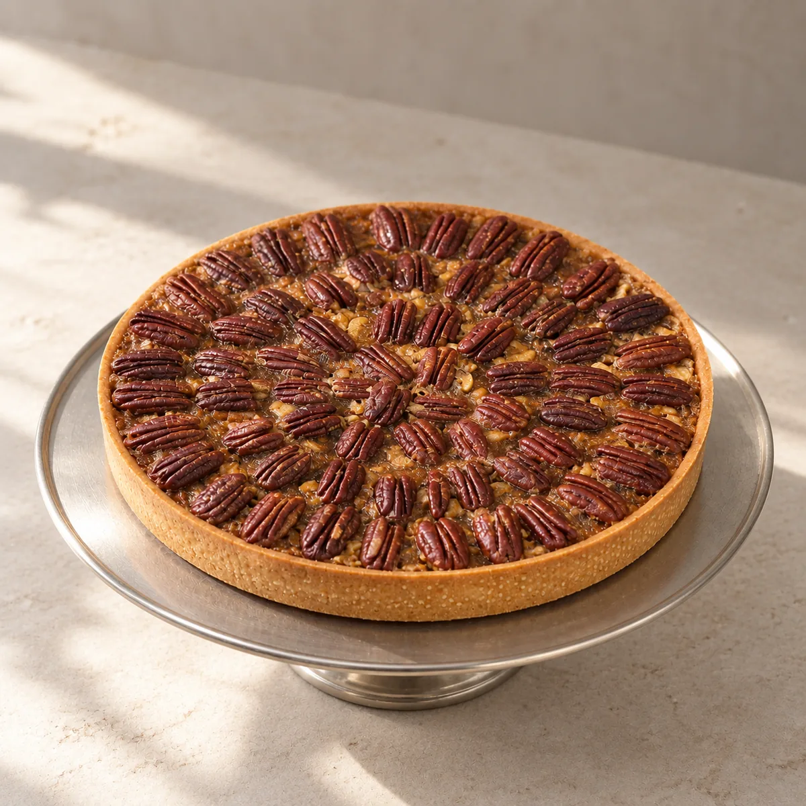
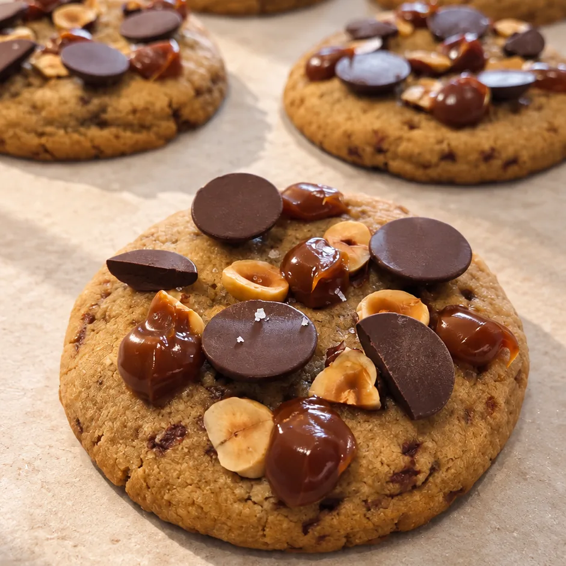
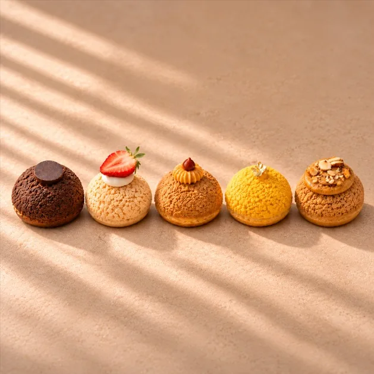
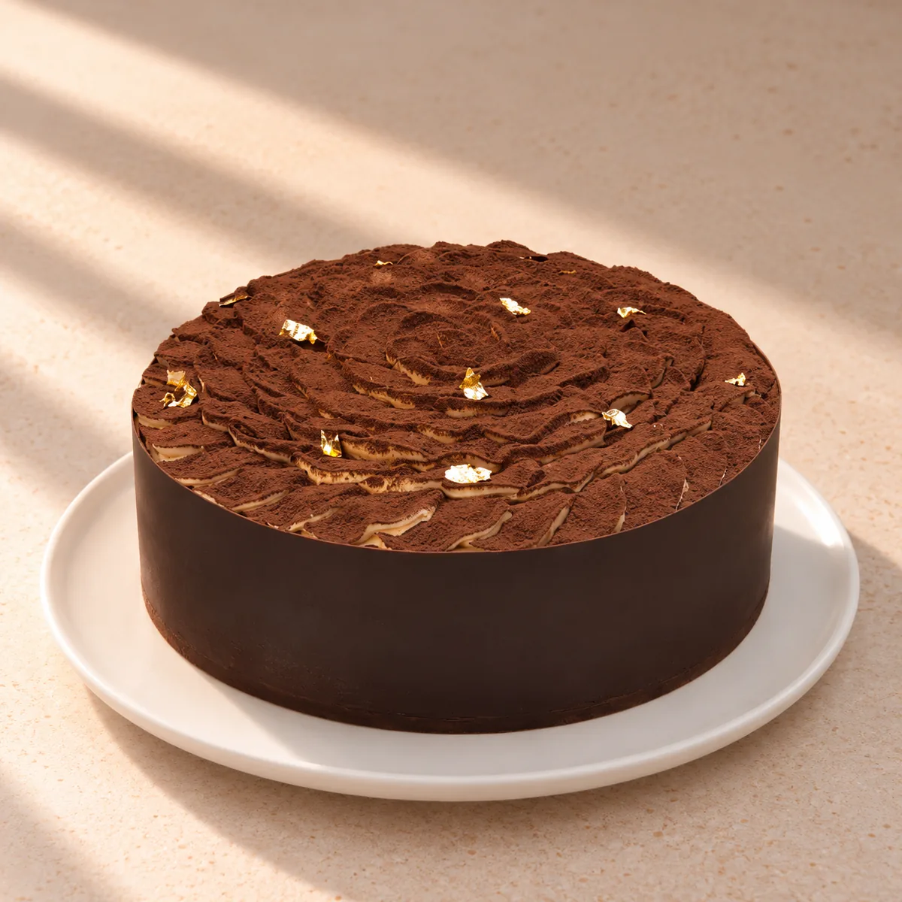
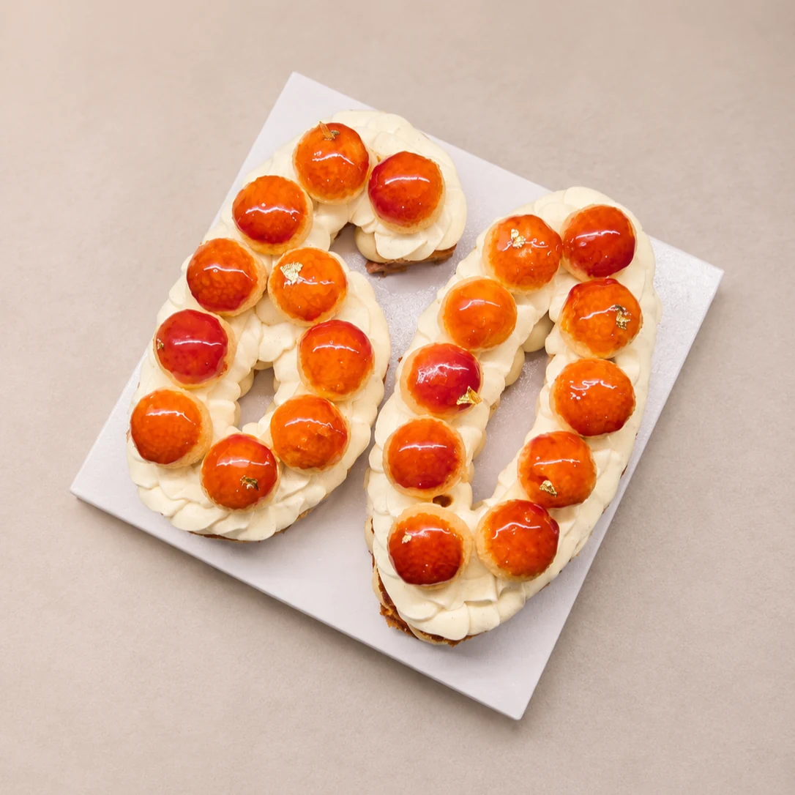
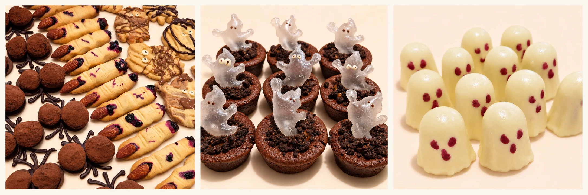
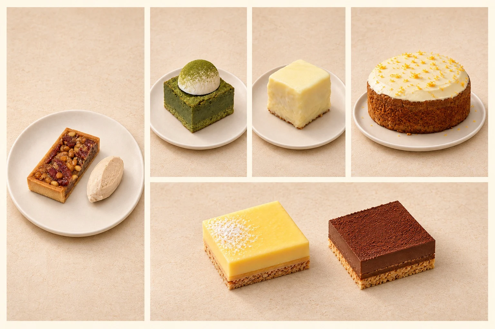
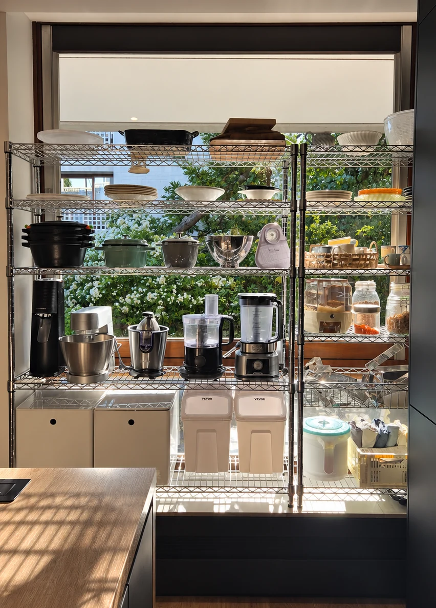

Des gâteaux à la façon de Madame Cho, à Meudon.
Sur commande, à retirer sur rendez-vous, tous les jours de 9 h à 19 h.
Voir la carteMadame Cho, c'est la pâtisserie à votre écoute : entremets, tartes, choux et cookies, préparés à la commande, avec le soin du détail et une touche de Corée.
La carte

Entremets aux fruits
Une génoise moelleuse, une crème vanille et des fruits de saison, pour un gâteau qui change au fil de l'année.

Charlotte chocolat-framboise
Du chocolat sous toutes ses textures, et juste ce qu'il faut d'acidité avec la framboise.

Tarte aux noix de pécan
Le sirop de riz apporte une douceur délicate, juste assez pour révéler le goût des noix sans le masquer.

Cookies au chocolat
Noisette et caramel, ou cacahuète et praliné, au chocolat noir ou au chocolat au lait : à vous de choisir.

Choux
Choux craquelin garnis selon vos envies et posés sur un sablé : vanille, caramel, chocolat, praliné noisette ou citron.

Petits gâteaux du goûter
De petits cakes moulés pour le goûter, à partager ou à offrir.
Tous nos gâteaux sont préparés dans un atelier qui utilise aussi des fruits à coque et des arachides.

Anniversaires Un gâteau à votre nom
Pour un anniversaire, Madame Cho réalise votre gâteau sur commande, pour 4 à 12 personnes. Saveurs, couleurs, ingrédients, décoration : faites-lui part de vos envies pour imaginer ensemble un gâteau à votre image.
Une plaque en chocolat avec le prénom et le message de votre choix est comprise dans le prix.
Commandez au moins 2 jours à l'avance.
Faire ma demande
disposés sur un support de 25 × 25 cm.
Anniversaires Number Cake façon Saint-Honoré
Le Saint-Honoré revisité en gâteau chiffre pour les anniversaires !
Une pâte feuilletée croustillante, une crème à la vanille, du caramel, une chantilly à la vanille et de petits choux caramélisés.
Pour plus de parts, contactez-nous pour un devis.
Prix TTC · Création sur commande.
Événements & créations sur commande Un thème, une occasion, une touche gourmande.
Anniversaire d’enfant, baptême, mariage ou toute autre occasion : Madame Cho imagine des créations gourmandes sur commande, adaptées au thème et à l’ambiance que vous souhaitez. Halloween n’est ici qu’un exemple parmi tant d’autres !
Partagez vos envies, votre thème, la date et le nombre de personnes : imaginons ensemble les douceurs qui accompagneront votre événement.

Professionnels Pour les restaurants et les entreprises
Madame Cho prépare chaque semaine les desserts de restaurants et de cafés parisiens : tartes, cakes, cookies, brownies et carrés. Pour une réunion, un séminaire ou une fête d'entreprise, Madame Cho compose une sélection sucrée, sur devis.
- Plateaux de petites pièces
- Boîtes individuelles
- Gâteaux à partager
- Coffrets de cookies à offrir
Commande deux semaines à l'avance, sur devis.
Demander un devis
La maison Madame Cho
Diplômée de l'Université nationale de Séoul, Youngmi arrive en France en 2015 et se forme à l'École Ducasse. Elle passe six ans dans de grandes maisons de la gastronomie française, dont le George V et La Réserve. Aujourd'hui, à Meudon, elle prépare chaque gâteau à la commande et partage aussi les saveurs de la Corée.
- Université nationale de Séoul
- École Ducasse
- George V et La Réserve
- Saveurs coréennes

Dans l’atelier
C’est dans cet atelier que Madame Cho prépare ses créations. Ustensiles, moules et petits équipements composent son espace de travail au quotidien.
Découvrir les gâteauxCommander Comment ça marche
- 1Vous choisissezAjoutez vos gâteaux à votre demande, sans engagement.
- 2Madame Cho vous répondSous 24 heures, avec une proposition écrite : le prix, le jour et l'heure du retrait.
- 3Vous confirmezVous acceptez la proposition par écrit, et Madame Cho confirme votre commande.
- 4Vous retirez à MeudonAu 4 avenue du Château, à l'heure convenue.
- Retrait
- Sur rendez-vous, au 4 avenue du Château, 92190 Meudon, tous les jours de 9 h à 19 h. Pas de livraison. À quelques minutes de Boulogne-Billancourt, d'Issy-les-Moulineaux, de Sèvres, de Chaville et de Clamart.
- Délais
- La veille pour les cookies et la tarte, 2 jours avant pour les autres gâteaux. Annulation sans frais jusqu'à 24 heures avant le retrait. Pas de retrait le 24 décembre.
- Paiement
- Au retrait, par carte bancaire, virement ou espèces. Pour une personnalisation au-delà de la plaque, un acompte de 30 % est demandé.
- Conservation
- Indiquée sur la page de chaque gâteau.